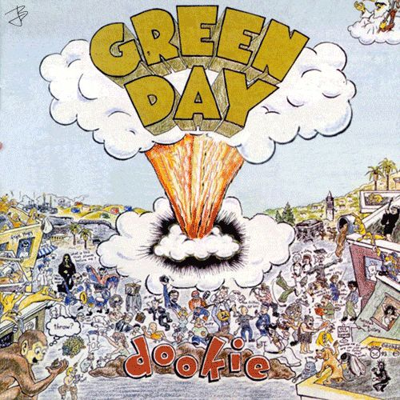

A Little Bit of Band Comparisons
TEXT
In life, there are so many ways for people to connect. Lots of people connect at work, school, or during
their favorite hobbies. Music is one of the great connectors of the world. There are so many types of
music out there, that when you find the kind that speaks to your soul, it can be life changing.
"Music is a moral law. It gives a soul to the Universe, wings to the mind, flight to the imagination,
a charm to sadness, gaiety and life to everything. It is the essence of order, and leads to all that is
good and just and beautiful.”
– Plato
Because music can play such a vital role in our lives, we all develop favorites. Whether it's favorite bands,
or even just a generic type of music, everyone has an opinion on music. There's music we love for when
we're happy or celebrating, music to get us through a breakup, or music to distract us ever so slightly while
we get work done. Music is something we could look at in infinite ways. Here is a table just to look at some
popular bands and the things they do.
TABLE
| A Few of My Favorite Bands |
| Band Name |
Band Info |
Album Info |
Song I'd Recommend |
| No. of Members |
Genre |
No. Studio Albums |
Highest Rated Album |
| Frank Turner |
5 |
Folk Punk |
8 |
Tape Deck Heart |
"If I Ever Stray" |
| Bowling For Soup |
4 |
Pop Punk |
10 |
A Hangover You Don't Deserve |
"1985" |
| GreenDay |
3 |
Punk/Rock |
13 |
American Idiot |
"BasketCase" |
LIST
Frank Turner
- Years Active: 2001-Present
- Bandmates
- Frank Turner
- Ben Lloyd
- Tarrant Anderson
- Matt Nasir
- Nigel Powell

- Years Active: 1994-Present
- Bandmates
- Jaret Reddick
- Chris Burney
- Gary Wiseman
- Rob Felicetti
- 
GreenDay
- Years Active: 1987-Present
- Bandmates
- Billie Joe Armstrong
- Mike Dirnt
- Tre Cool